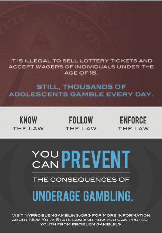
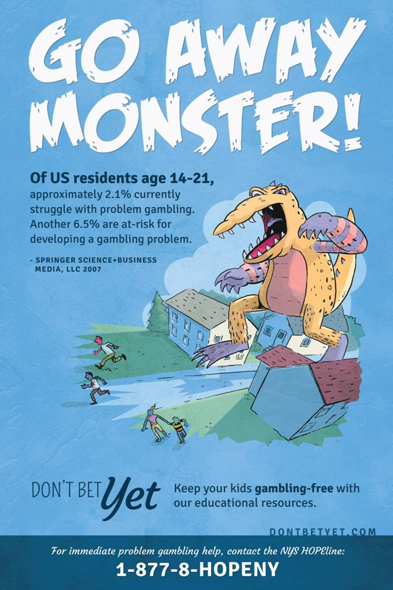

Problem Gambling Prevention Coordinator Position Open
Problem Gambling Resources
- About the New York Council on Problem Gambling
- Let's Go Monster! Brochure for Parents
- Talking to Your Children About Problem Gambling
- Problem Gambling Impacts Individuals and Families
- Talk to Your Kids About Gambling - En Espanol
- Problem Gambling: What Parents Need to Know
- Tips for Parents
- Problem Gambling and Your Kids Fact Sheet
- Parent Youth Activity Sheet
- Know the Signs
- Starting Young Leads to More Problems
- Problem Gambling Consequences in NYS
- NYCPG Palm Card
- Underage Gambling Radio WAV
- Underage Gambling TV (HD Video)
- Gambling and Your Kids